My project is a recreation/parody of the famous chestburster scene from the movie Alien, directed by Ridley Scott. The characters are Kane (played by Rich Otterson), Lambert (played by Sandra Nakasone), and Parker (played by Tom Lustig). And my dog Puck.
First, I watched the scene on Youtube a few times to get a feel for what the important aspects of the scene were. I also found the script online to see what the how the scene was written.
I then transcribed the script as shot (from the video) using Amazon Storywriter. I knew I would only have 3 actors (my girlfriend and two of my friends from high school), so I had to modify the script to fit those constraints. Luckily, the scene's dialog is mostly between three characters anyway, but I had to assign Ash's line to Lambert.
Now using only my script, I made a storyboard and camera plots. From the camera plots, I marked up my script with camera angle numbers.
I filmed the scene at my parents house because their dining room table has a removable center leaf. The first half of the shoot was straightforward, just read the script from different angles. Once Rich starts coughing, it got more complicated. I also decided to shoot most of the second half with the camera hand-held, to make it look more dynamic.
A lot of the effects happen off-camera. The first blood splat was a completely separate shirt that I spread fake blood on. So we shot the actors struggling, then Rich changed his shirt, and then we shot another struggling scene. But I edited it together with the splat sound effect during a cut to a quick reaction from the other characters, so it looks more seamless. I did the same thing when Puck leaves the body and jumps off the table.
To shoot the second blood splat, where the chest visibly jumps, I removed the table's center leaf and Rich got under the table and put his head through the tablecloth. I stuffed the shirt with towels, and to make the chest pop, we cut a hole in the back of the shirt and Rich punched up from under the table.
For the dog, we cut another hole in the front of the shirt and pushed Puck up through the hole. I avoided shooting above the neck, because Rich couldn't hold his head there and get Puck through at the same time.
The first half of the scene was straightforward to edit. The second half was again more complicated. I discovered that I had forgotten to roll sound for 2 shots, but luckily there wasn't much lost because those shots would have picked us up trying to get Puck's attention to look different directions. I recorded some human sounds (gasps) for the reaction to Puck coming out of the chest. For scared breathing of the actors, I just looped some of the audio from other shots. I recorded my dog playing tug-of-war with me with a rope toy for the growling and a couple barks. Any silence left was covered up by a myriad of sound effects I got from freesound.org.
Besides sound, I made some effects during the final shot of Puck jumping off the table and running away. I used the three camera shake/jitter effects demonstrated in this tutorial; when Puck lands on the floor, when he runs through the door, and right before the video cuts off. In addition, I digitally zoomed the footage so that it looks kind of like a found-footage clip with crash zooms.
For the title card, I did some searching and found some website that said the original Alien title sequence used Helvetica Black. So I just put ALIEN in Helvetica Black and DOG in Helvetica Light, and turned the kerning way up.
|
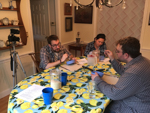 BTS 1 |
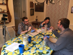 BTS 2 |
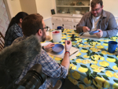 BTS 3 |
|
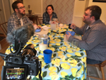 BTS 4 |
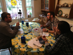 BTS 5 |
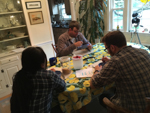 BTS 6 |
|
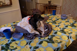 BTS 7 |
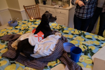 BTS 8 |
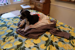 BTS 9 |
|
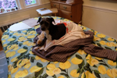 BTS 10 |
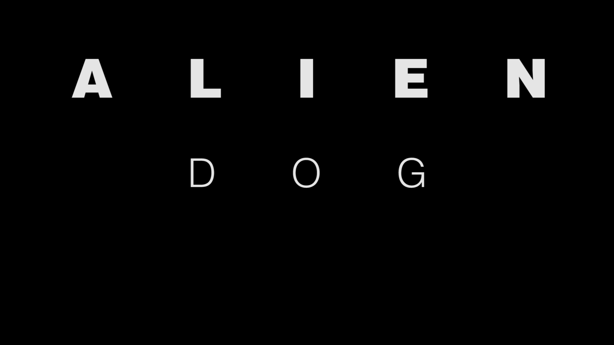 Title Card |
{kind=link}
{kind=link}
{kind=link}
{kind=link}
{kind=link}
{kind=link}
{kind=link}
{kind=link}
{kind=link}
{kind=link}
{kind=link}
{kind=link}